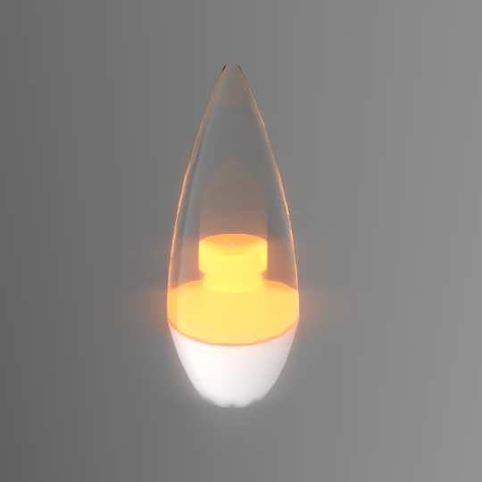

This is a lamp model based off the LED Ikea Ryet 50325332, which is a clear chandelier or candelabra lamp / bulb. The lamp model does not include the screw, as it is unlikely to be visible in any render, but is provided in the specification below should you want to model it yourself. This particular Ikea product is no longer sold.
The SKU of the product is provided to prevent confusion with many similarly named but different looking Ryet lamps sold by Ikea across the world.
- 220-240V
- 50/60Hz
- 2.8W
- 200lm
- 2700K
- LED1525C3
- E14
Materials
The colours have been calibrated with Macbethcal but the specularity and roughness values are guessed.
Ikea does not supply IES files of their products. The actual product contains a rather interesting reflector which casts an interesting light distribution. However, as there is no Ikea IES file provided, I have substituted the light bulb with a much more bland light, the omnidirectional 2700K A19 lamp by Cree. This IES file is of the A19 40W variant, which produces more than double the lumen output of the original lamp.
To reiterate, this lamp is no longer sold, and does not have a matching IES file. This means that you should not use this lamp for an accurate reproduction of a specified lamp. If you simply need a generic lamp that someone might get cheaply off the shelf somewhere but isn't the focus of your light simulation, this lamp may be alright.
Usage
This Radiance model follows the Radiance Filesystem Hierarchy
Standard. As
such, please run make lib to build the Radiance mesh file. Once done, you can
use this in your scene by:
!xform lib/lamp-led-ikea-ryet-50325332/obj/model.rad
Authors
This model was created by Dion Moult.